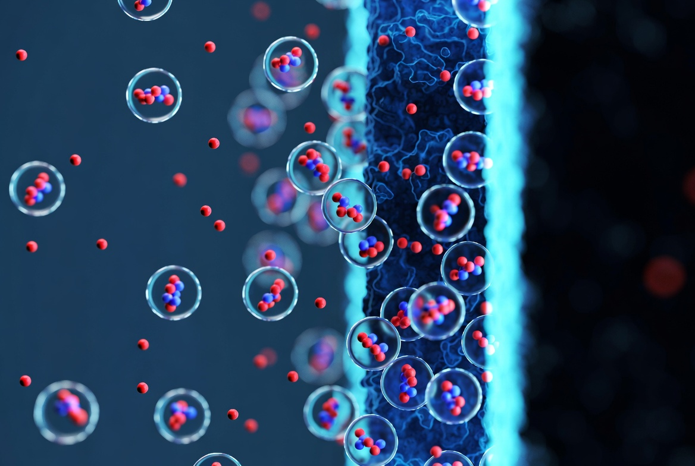
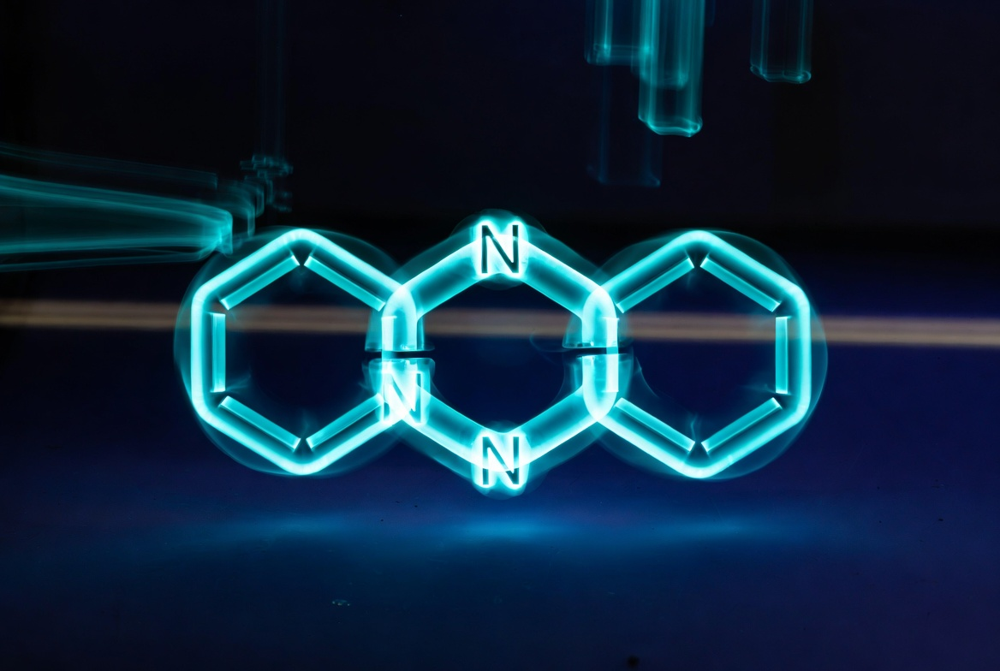
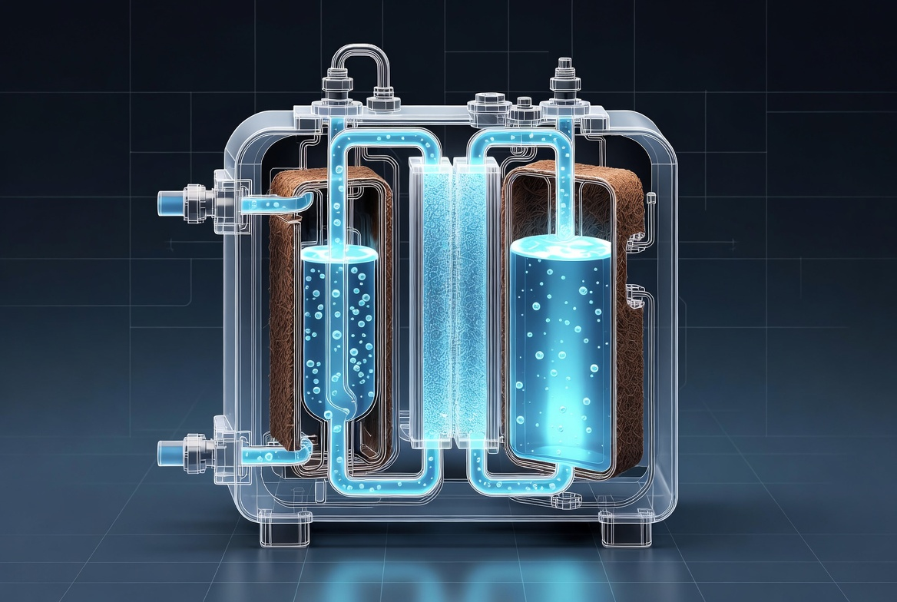
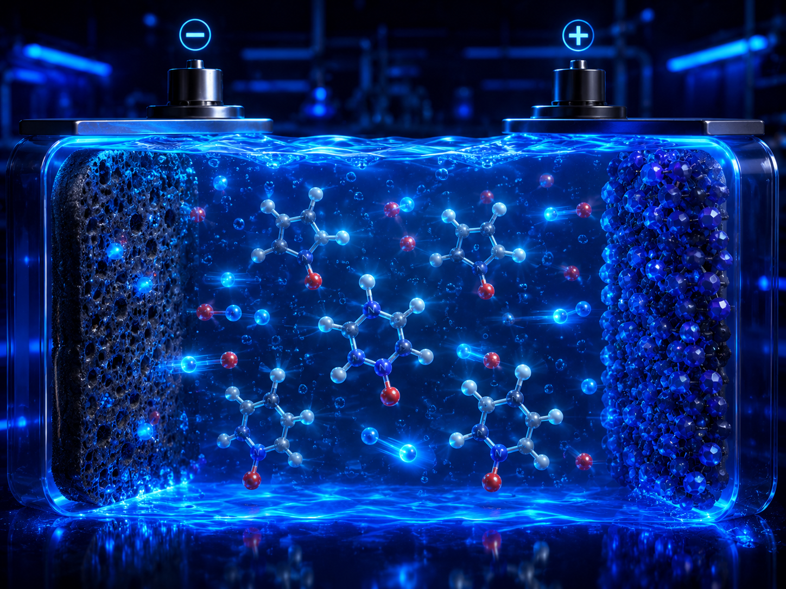
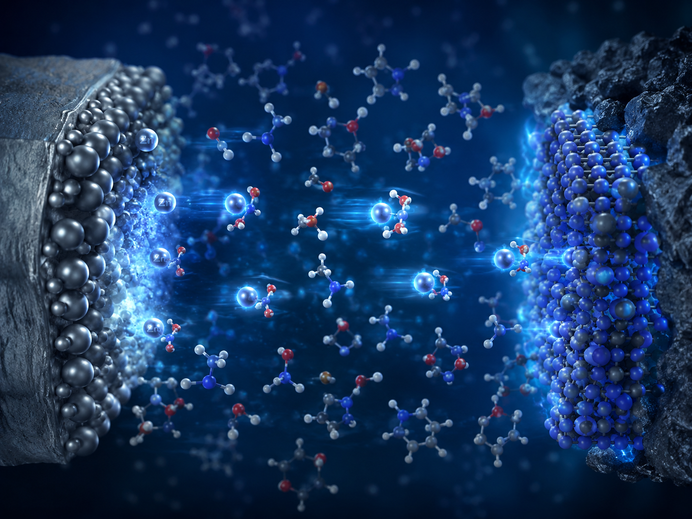
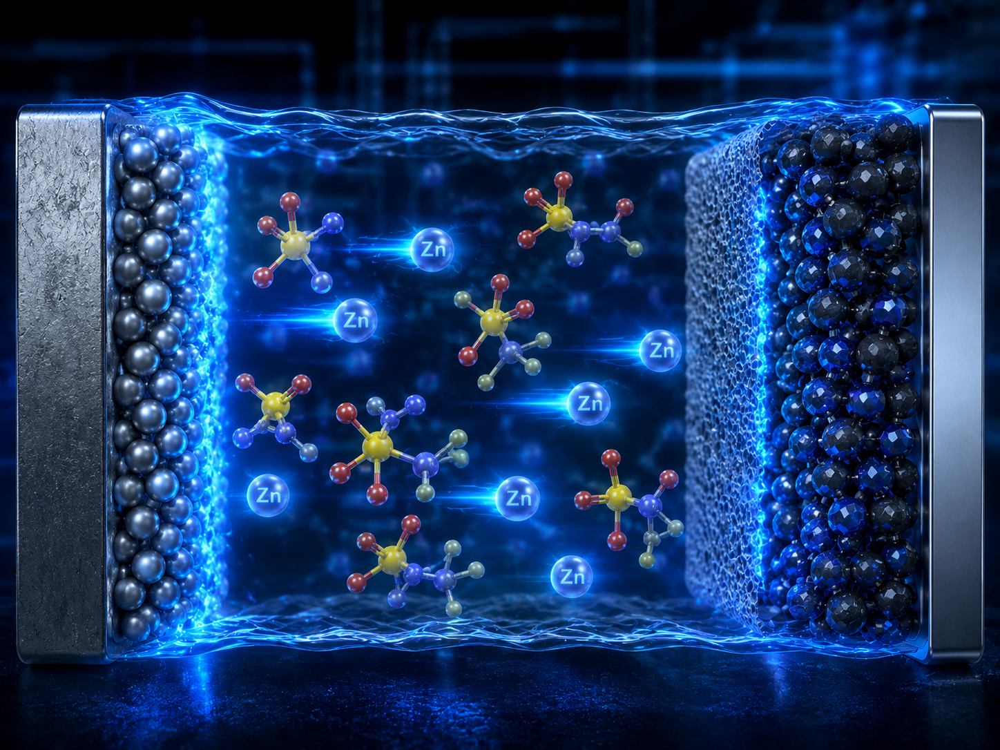
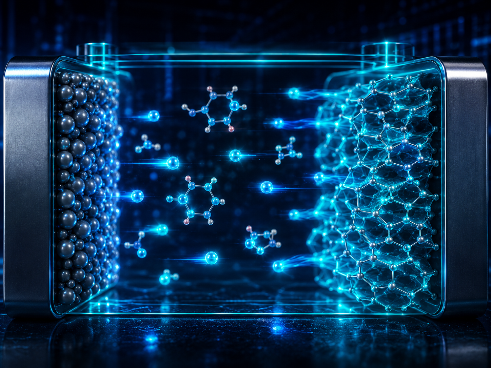

Academic Background
A scientific journey, from Chemistry Degree through PhD and international research experience.
Formation
2018 – 2022
PhD in Computational and Theoretical Chemistry
IMDEA Energy, Madrid · International stay at DTU, Denmark
Four years of research in quantum chemistry DFT, molecular dynamics, applied to electrochemical storage systems. Awarded the prestigious María de Maeztu fellowship for a research stay at the Technical University of Denmark.
2016 – 2017
Master in Organic Chemistry
Universidad Complutense de Madrid (UCM)
Specialization in organic synthesis and computational methods applied to molecular design and drug discovery.
2011 – 2015
Degree in Chemistry
Universidad Complutense de Madrid (UCM)
Broad foundation in physical, organic, and inorganic chemistry. Early exposure to computational and statistical methods.
Research Output

Read paper ↗01
This study investigates how capacitive ion-exchange membranes can selectively tune the ratio of monovalent and divalent cations in water, with potential applications in water purification and desalination technologies. I contributed by computing binding energies with DFT between the electrodes and the different ions.
DOI: 10.1016/j.watres.2024.121469 ↗
Read paper ↗02
As main author I combined computational and experimental investigation of the redox potentials of phenazine derivatives in aqueous media, providing a systematic framework for screening organic molecules as candidates for sustainable Redox Flow Batteries.
DOI: 10.1002/cssc.202201984 ↗
Read paper ↗03
As main author I did high-throughput DFT modelling to systematically screen phenazine-based molecules for their suitability as electrolytes in organic redox flow batteries, accelerating the discovery of next-generation energy storage materials.
DOI: 10.1039/D0SE00687D ↗
Read paper ↗04
This work reports an unprecedented level of aqueous solubility for the TEMPO radical, enabling its use as a high-capacity catholyte in aqueous organic redox flow batteries, a significant step toward scalable green energy storage. I contributed by computing Molecular Dynamics Simulations between TEMPO and the different Li-Salts to understand the change in TEMPO's solubility.
DOI: 10.1002/aenm.202301929 ↗
Read paper ↗05
A comparative study of two zinc salt electrolytes in PEG-based molecular crowding systems for aqueous zinc batteries, revealing how electrolyte choice critically impacts battery performance and stability. I contributed by Molecular Dynamics Simulations for the different zinc-based systems, focusing on their coordination and diffusion properties.
DOI: 10.1016/j.mtener.2023.101339 ↗
Read paper ↗06
This work introduces a novel bi-salt molecular crowding electrolyte strategy for aqueous zinc hybrid batteries, achieving improved electrochemical stability and energy density through careful electrolyte engineering. I contributed by Molecular Dynamics Simulations for the different zinc-based systems, measuring the PEG effect on free water molecules per system.
DOI: 10.1016/j.ensm.2022.09.036 ↗
Read paper ↗07
An ultrahigh performance zinc-organic battery is demonstrated using a poly(catechol) cathode in concentrated Zn(TFSI)₂ aqueous electrolytes, setting a new benchmark for capacity and stability in aqueous organic battery systems. I contributed by Molecular Dynamics Simulations for the different zinc-based systems, measuring the TFSI effect and zinc coordination.
DOI: 10.1002/aenm.202100939 ↗08
QSAR classification models were developed to predict the inhibitory activity of small molecules against BACE1, a key enzyme in Alzheimer's disease progression, combining machine learning with computational chemistry to accelerate drug discovery. I contributed in the statistical analysis and dataset creation.
DOI: 10.1038/s41598-019-45522-3 ↗Extra Training
Certification · 2022–2023
Full Stack in AI, Machine Learning and Big Data
Intensive bootcamp covering the full ML stack — from data engineering and cloud computing to model deployment and production pipelines.
KeepCoding · 2022 / 2023
Fellowship · 2021
María de Maeztu Fellowship
Competitive international research grant awarded for a stay at the Atomistic Scale Modelling group at the Technical University of Denmark (DTU) under Dr. Piotr Da Silva.
DTU · Denmark · 2021
Certification · 2015
Microbiology and Biotechnology Assays
440-hour official certification covering laboratory assay techniques, quality standards, and microbiology protocols.
AENOR · Madrid · 2015
Course · 2015
Biomedical Engineering
150-hour course covering biomedical instrumentation, signal processing, and engineering principles applied to medical devices and healthcare systems.
DqBito · Madrid · 2015
Teaching · 2015–2017
Professor of Statistics and Biostatistics
Taught university-level statistics and biostatistics courses, covering experimental design, hypothesis testing, and data analysis for life sciences students.
Ferraz Academy · Madrid · 2015–2017
Speaker · 2023
International Conference Speaker
Invited speaker and chairman at EU project kick-off meetings: Photo2fuel at Uppsala University (Sweden) and REWET at Alpiarça Natural Restoration Park (Portugal).
Uppsala · Sweden · Portugal · 2023
Oral Presentation · 2020
eSSENCE-EMMC International Workshop
Oral presentation and poster on phenazine-based redox flow batteries at the Multiscale Modelling of Materials and Molecules workshop.
International · 2020
Poster · 2020
E3TECH International Workshop
Poster presentation on computational chemistry, phenazines, and electrochemistry applied to redox flow batteries at the Electrochemical Technology for Environmental and Energy Applications workshop.
International · 2020
Poster · 2019
BiGmax Max Planck Summer School
Poster on high-throughput computational techniques for investigating redox chemistry of phenazines at the Big-Data Driven Materials Science summer school.
Max Planck Research Network · 2019